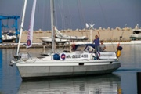

پذيرش > سایت نوشته ها > گروه «زنان بر امواج» در مراکش / تلاشی برای حق پایان دادن داوطلبانه سالم و امن به (...)


 گروه «زنان بر امواج» در مراکش / تلاشی برای حق پایان دادن داوطلبانه سالم و امن به بارداری گروه «زنان بر امواج» در مراکش / تلاشی برای حق پایان دادن داوطلبانه سالم و امن به بارداری
19 مهر 1391 - سوده راد - نسخه قابل چاپ
«زنان بر امواج» نام گروهی از کنشگران است که ۱۳ سال پیش، با هدف پیشگیری از بارداریهای ناخواسته و سقط جنین غیر بهداشتی آغاز به فعالیت کردند.
این زنان با قایق و کشتی به مرزهای آبی کشورهایی میروند که قانون آنها از پایان دادن داوطلبانه به بارداری زنان حمایت نمیکند. به این ترتیب آنها میتوانند از سویی خدمات و اطلاعات لازم را به شماری از زنان باردار و نیازمند به این خدمات ارائه دهند و از سویی دیگر موضوع پایان دادن داوطلبانه به بارداری را به موضوع روز سیاست داخلی کشور تبدیل کنند.
در روز بیست و چهارم ماه سپتامبر که روز جهانی «مبارزه برای حق پایان دادن داوطلبانه سالم و امن به بارداری» در جهان است، کنشگران برابری جنسیتی با برگزاری برنامههای مختلف، بر اهمیت حق مالکیت زن بر بدن خود و حق پایان دادن به بارداریهای ناخواسته، در شرایط بهداشتی و قانونی تأکید میکنند. به همین بهانه امسال گروه «زنان بر امواج»، برای نخستینبار یک کشور مسلمان را به عنوان مقصد انتخاب کردند: مراکش. چراکه دامنه ممنوعیتها در زمینه حق پایان دادن به بارداریهای ناخواسته، این روزها عموماً کشورهایی را فراگرفته است که «دین» در آنها از قدرت سیاسی- اجتماعی ویژهای برخوردار است. در این زمینه میتوان از کشورهایی چون ایران، ایرلند شمالی و لهستان و همچنین ایالتهایی از آمریکا نام برد.
با مطالعه تاریخ بشر، درمییابیم که روشهای پایان دادن داوطلبانه به بارداری که در زبان فارسی رایج از آن به «سقط جنین» یاد میشود، یکی از قدیمیترین کشفهای بشر است و انسان قرنهاست که با روشهای پیشگیری از بارداری و پایان دادن داوطلبانه به آن پی برده است. با این حال، از زمانی که دوران مدرن زندگی بشر، با خطوط مرزی مشخص و حکومتهای قانونگذار آغاز شد و حقوق زنان، همچون حقوق بشر در گرو این قوانین قرار گرفت، این حق هم دچار اما و اگرهایی شد که همچنان هم ادامه دارد. به عنوان نمونه، موضوع قوانین مربوط به سلامتی جنسی زنان، این روزها ازجمله موضوع مباحثههای داغ نامزدهای انتخاباتی ریاست جمهوری ایالات متحده آمریکاست... و اما: گروه «زنان بر امواج» چه میکنند؟
سقط جنین، قانونی یا غیر قانونی؟
بر اساس گزارش رسمی سازمان جهانی بهداشت هرساله در دنیا بین ۱۹ تا ۲۰ میلیون مورد بارداری بدون بهرهگیری از امکانات و دانش مناسب توسط افراد پایان داده میشود.
نزدیک به ۹۷ درصد از این سقط جنینها در کشورهای درحال توسعه انجام میگیرد. نزدیک به ۶۸ هزار زن هر سال جان خود را بر اثر عوارض این اعمال غیر بهداشتی از دست میدهند یا دچار نواقص جسمانی غیرقابل برگشت میشوند که تا پایان عمر با آنها خواهد ماند. خونریزیهای شدید، عفونت و مسمومیت از مهمترین عوارض منجر به مرگ این نوع از سقط جنین هستند.
قانونی کردن پایان دادن داوطلبانه به بارداری، یک گام لازم ولی ناکافی برای بهبود شرایط سلامت زنان، به ویژه در کشورهایی مثل هند است که این عمل تا مدتها در آن قانونی بوده ولی دسترسی به آن برای همچنان همه اقشار جامعه آسان نیست. دسترسی به خدمات امن و بهداشتی سقط جنین، یکی از حقوق بنیادین زنان برای احترام به حق مالکیت بدن زنان، مستقل از سن و ملیت و محل زندگی آنهاست. بنابراین میتوان گفت دلیل اصلی مرگ و میر بر اثر سقط جنین، نه خونریزی و عفونت که نقض حقوق بشر زنان و شأن انسانی آنهاست.

اسب تروآ بر سواحل مراکش
از روز چهارم، «زنان بر امواج» در قایق کوچکی که با پارچهنویسهایی پوشیده شده است در اطراف بندر سمیر در شمال مراکش حرکت میکنند و تا روز یازدهم اکتبر نیز به فعالیت خود ادامه خواهند داد.
هدف آنها این است که با پارچهنویسهای بزرگ شماره تلفنی را تبلیغ کنند که در مورد روشهای امن و سالم سقط جنین اطلاعات میدهد؛ آن هم در کشوری که اصولاً جز «سقط جنین درمانی» راه قانونی دیگری برای پایان دادن داوطلبانه به بارداری وجود ندارد.
دولتمردان مراکشی پیشتر اعلام کرده بودند که قایق اجازه لنگر انداختن در بندر را نخواهد داشت و نیروی پلیس مراکش هم از دسترسی روزنامهنگاران و رسانهها به قایق جلوگیری کرده است، اما بعد از ظهر همان روز نخست، کنشگران «زنان بر امواج» اعلام کردند که پیشبینیهای لازم را کردهاند و قایقشان چند روزی هست که در بندر لنگر انداخته است. در واقع این قایق خصوصی مراکشی توسط گروه هلندی اجاره شده است و طبق قانون، آنچه در داخل این قایق میگذرد از قوانین هلند و نه مراکش تبعیت میکند.
این گروه در این مرحله تنها در مورد نوعی داروی ضد بارداری اطلاعات میدهد که تا هفته ششم بارداری اثربخش است و به راحتی میتواند در خانه مورد استفاده قرار گیرد. این گروه در این مرحله نمیتواند در مورد روش جراحی برای سقط جنین که نیازمند امکانات ویژه است اطلاعرسانی کند. پیشتر هم در آبهای آزاد نزدیک لهستان، با حضور تیمی مجرب از پزشکان به ارائه خدمات پایان دادن داوطلبانه به بارداری به دو روش دارویی و جراحی پرداخته بود و حالا این اولین آکسیون آنها در یک کشور اسلامی است.
در مراکش، همچون ایران، سقط جنین درمانی، فقط در صورتی قانونی است که جان مادر در خطر باشد و حتی دادن اطلاعات در مورد روشهای سقط جنین هم جرم محسوب میشود.
براساس گزارش وزارت بهداشت مراکش، در این کشور هر روز بین ۶۰۰ تا ۸۰۰ مورد سقط جنین غیر قانونی در شرایط بهداشتی نامناسب انجام میگیرد و از این میان ۹۰ زن در سال جان خود را از دست میدهند که آمار در خور توجهی است.

مخالفان چه میگویند؟
بیتردید، فعالیت گروه «زنان بر امواج»، مخالفانی هم دارد. در این چند روز، نزدیک به ۲۰۰ نفر بارها در بندر سمیر با حمل پلاکاردهایی به زبان فرانسه و انگلیسی، عکسهایی دلخراش از جنینهای سقط شده را نمایش میدهند که عموماً مربوط به زایمانهای زودرس هستند. آنها نه تنها علیه حضور کنشگران، که بر ضد سقط جنین هم اعتراض دارند.
بنیانگذار این مجموعه کنشگر بارها به میان این جمع رفته و بروشورهایی به زبان انگلیسی و عربی میان آنها پخش کرده است. هرچند هربار، تظاهرکنندگان با شعار «قاتل» از او استقبال میکنند. پلیس مراکش با اینکه از حضور کنشگران در مراکش راضی نیست، اما دائماً اسکورتشان میکند تا به آنها هیچ آسیبی نرسد. یکی از معترضان، مردی ۲۳ ساله، به خبرنگاران آسوشیتدپرس گفته است: «ما اینجا آمدهایم تا به حضور این افراد در کشورمان اعتراض کنیم، چون نمیتوانیم این ارزشها را بپذیریم. ارزش قتل را نمیپذیریم و کشتن انسانی که متولد نشده در سنتهای ما جایی ندارد.»
ربکا گمپرت (Rebecca Gomperts)، بنیانگذار و مدیر «زنان بر امواج» میگوید: «ما اینجا خط ویژه تلفنی راهاندازی کردیم که به زنان در مراکش، اطلاعات و آگاهی میدهد و تنها حضور یک قایق کوچک برای مدت کوتاه و محدود نمیتواند مشکل همه را حل کند.» خط ویژه تلفنی که راهاندازی شده، تنها پیغامی ضبط شده را پخش میکند که در آن توضیح داده میشود در مراکش چگونه و با استفاده از چه داروهایی و در چه مهلتی از بارداری میتوان به آن پایان داد.
«زنان بر امواج» که به دعوت گروه «جنبش آلترناتیو برای آزادیهای فردی» (یک گروه کنشگر مراکشی برابریخواه) به مراکش رفتهاند، پیشتر در سال ۲۰۰۱ به ایرلند و در سال ۲۰۰۳ به اسپانیا رفته بودند و در سال ۲۰۰۴ هم مرزداران پرتغال مانع ورود آنها به آبهای این کشور شدند.
رادیو زمانه
ارسال به
بالاترین
،
توییتر
،
فریندفید
،
فیسبوک
در همين بخش :
 یک خبر تلخ؟ یک قانونشکنی؟ یک تصمیم بخشنامهای جدید؟ یک خبر تلخ؟ یک قانونشکنی؟ یک تصمیم بخشنامهای جدید؟
چرا بایست به سکسوالیته پرداخت؟ / نفیسه آزاد
آزارجنسی خانگی؛ «قربانی» نه، «نجات یافته»
زنان، بزرگترین بازندگان بهار عرب
سانسور از دیدگاه جنسیتی/الهه امانی
ديگر بخش ها :
طرح یک میلیون امضا
|
مقالات
|
سایت نوشته ها
|
اخبار
|
گزارش كمپين
|
گفت و گو
|
علیه سکوت
|
كوچه به كوچه
|
نامه های شما
|
گزارش ویژه
|
گفتگو با اعضا
|
ویژه سالگرد کمپین
|
تصویر برابری
|
دل آرام علی
|
تریبون
|
مقالات
|
تاریخ شفاهی
|
خارج از چارچوب
|
کتابخانه
|
درباره کمپین
|
کمپین در شهرها
|
کمپین در بند
|
صدای تغییر
|
ویژه 22 خرداد
|
لایحه حمایت از خانواده
|
گالری
|
عشا مومنی
|
امیر یعقوبعلی
|
خدیجه مقدم
|
راحله عسگری زاده و نسیم خسروی
|
پروین اردلان،جلوه جواهری، مریم حسین خواه، ناهید کشاورز
|
زینب پیغمبرزاده
|
سعیده امین، سارا ایمانیان، محبوبه حسین زاده، ناهید کشاورز و همایون نامی
|
احترام شادفر
|
نسیم سرابندی زاده،فاطمه دهدشتی
|
وبلاگ مهمان
|
پرونده خرم آباد
|
دستگیری ها
|
مریم مالک
|
پرستو اللهیاری
|
مهرنوش اعتمادی
|
سمیه رشیدی
|
Other Languages
|
همراهان
|
«فراخوان کمپین ده روز با بهاره هدایت»
| English
|